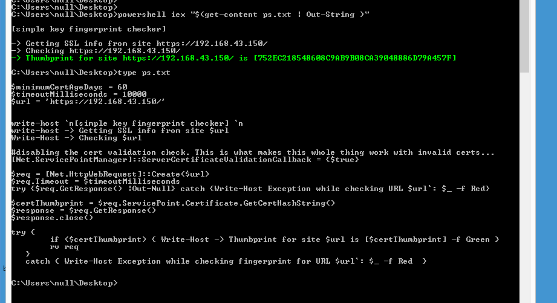

|| executing a powershell script as an arbitrary file type, author: xor-function || 11/06/2015 || Back to main
There has seems to be alot of info running powershell scripts by using the .net download string method to fetch a script on a webpage then run it with an iex. This is usually done to bypass execution policies that are set in place for ps1 scripts. There is really not that much info about running powershell code as a string read from a file on disk. The way to do this is to simply change the extention of a script to a different file type or remove it, but this doesn't really matter unless you are trying to hide what it is. For this example I'll just change it to a txt file, then read the file pipe that to out-string and then execute the result with an iex. powershell iex "$( get-content text-file.txt | Out-String )" pretty simple 